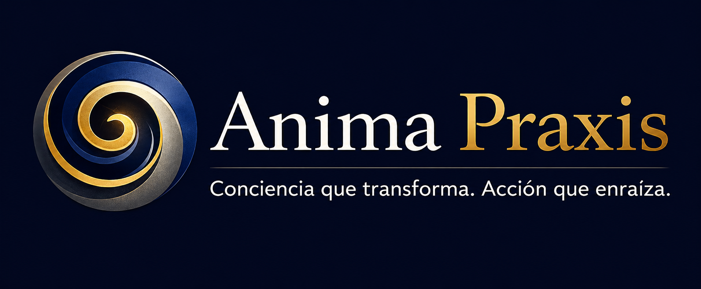

Hacia dónde se dirige
Orienta la dirección y los criterios que alinean a la organización.

Estrategia, Cultura, Coaching y Liderazgo conectados en un mismo sistema de desarrollo.
Visión del servicio
Dirección, carácter y comportamientos esperados.
↗ 02 · NÚCLEOLa referencia común que articula el sistema.
↗ 03 · PERSONAAcompañamiento humano con soporte de IA.
↗ 04 · LÍDERModelos, habilidades, formación y práctica.
↗Arquitectura del Backoffice
Capa 01 · Dirección y carácter
Orienta la dirección y los criterios que alinean a la organización.
Establece principios que orientan la actuación colectiva.
Traduce la referencia organizacional en comportamientos observables.
Núcleo del sistema
Propia de cada organización
Punto de partida
Valores ilustrativos · No representan resultados reales.
La evaluación registra el punto de partida. El proceso de Coaching impulsa el Desarrollo Personal; Liderazgo 360 fortalece el Desarrollo del Liderazgo; ambos contribuyen al Alineamiento a la Cultura.
Módulo 01 · DEMO conceptual
Acompañamiento con coach humano
Objetivo de desarrollo: [DEMO] Fortalecer una práctica alineada al rol.
Apoya la reflexión, organiza recursos y acompaña las tareas entre sesiones.
Experiencia de Coaching
Se define el foco de desarrollo.
El coach acompaña la reflexión.
Se accede a contenidos pertinentes.
La reflexión se traduce en práctica.
Se registra el compromiso.
La IA apoya entre sesiones.
El avance queda visible.
Módulo 02 · Desarrollo de Liderazgo 360
Referencia para el acompañamiento al desarrollo del líder.
Referencia para analizar y practicar respuestas ajustadas al contexto.
Espacio para trabajar habilidades dentro del proceso de desarrollo.
Progreso y evolución · Datos DEMO
Comparación ilustrativa del modelo. No representa resultados reales ni una validación psicométrica.
Un sistema · Tres áreas conectadas
Define dirección.
Define carácter y comportamientos.
Conserva la referencia común.
Establece la línea de partida.
Trabaja el desarrollo personal.
Trabaja el desarrollo del líder.
Hace visible la evolución.
Conecta desarrollo y organización.
Recorrido ficticio · Sin datos personales
Un líder ingresa al Backoffice.
Registra su evaluación base.
Visualiza su perfil inicial.
Identifica un objetivo.
Recibe Coaching y utiliza recursos.
Registra tareas y aprendizajes.
Trabaja una habilidad de liderazgo.
Consulta su avance.
Observa sus tres dimensiones.
Ajusta su siguiente foco.
Valor del modelo
El núcleo común
La cultura orienta el desarrollo.
El Coaching acompaña objetivos y acciones.
Modelos, habilidades y recursos conectados.
Tareas, recursos y logros en un mismo proceso.
Comparación clara sobre una escala común.
Backoffice Anima Praxis
Conciencia que transforma. Acción que enraíza.